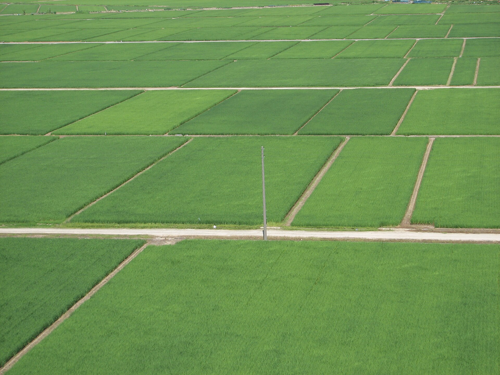
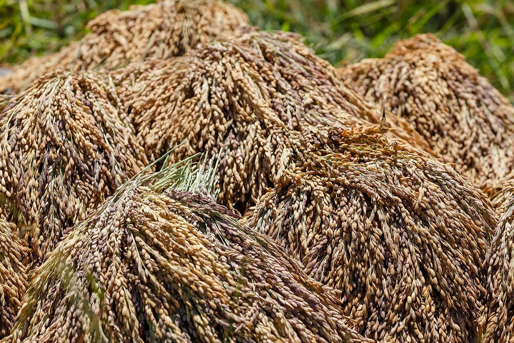
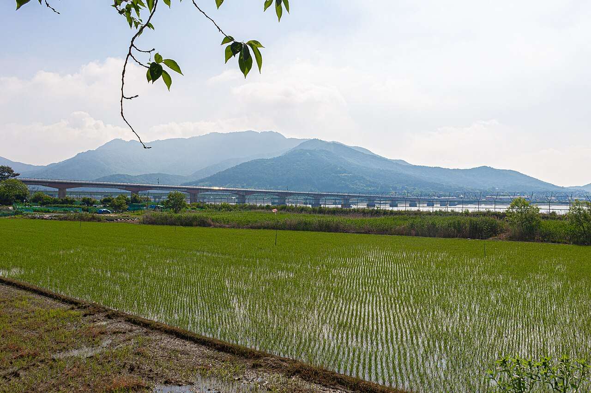
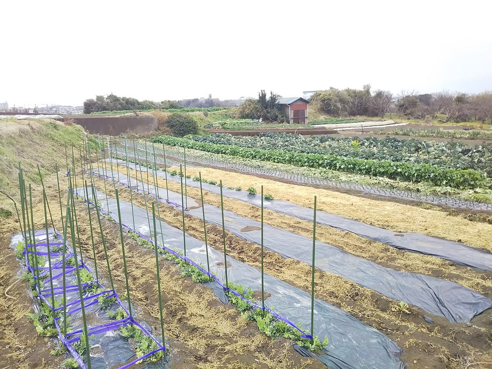
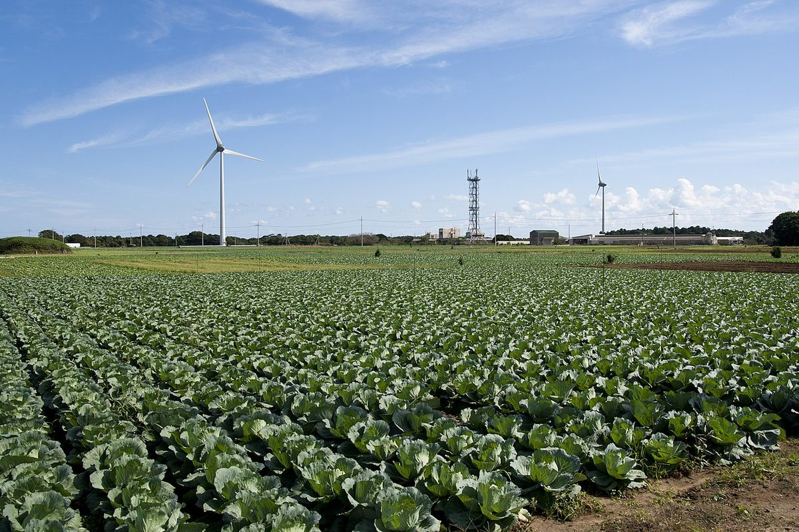
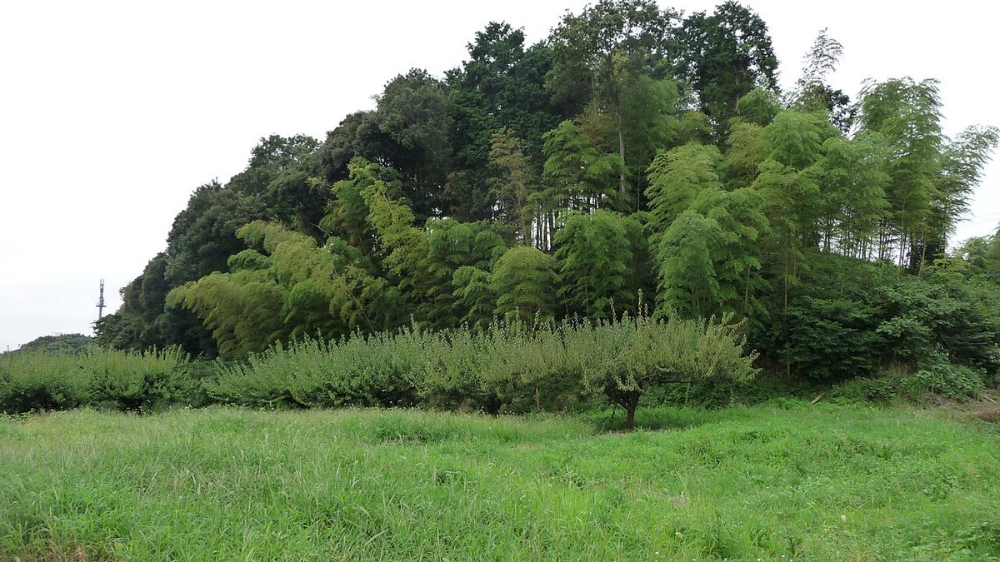
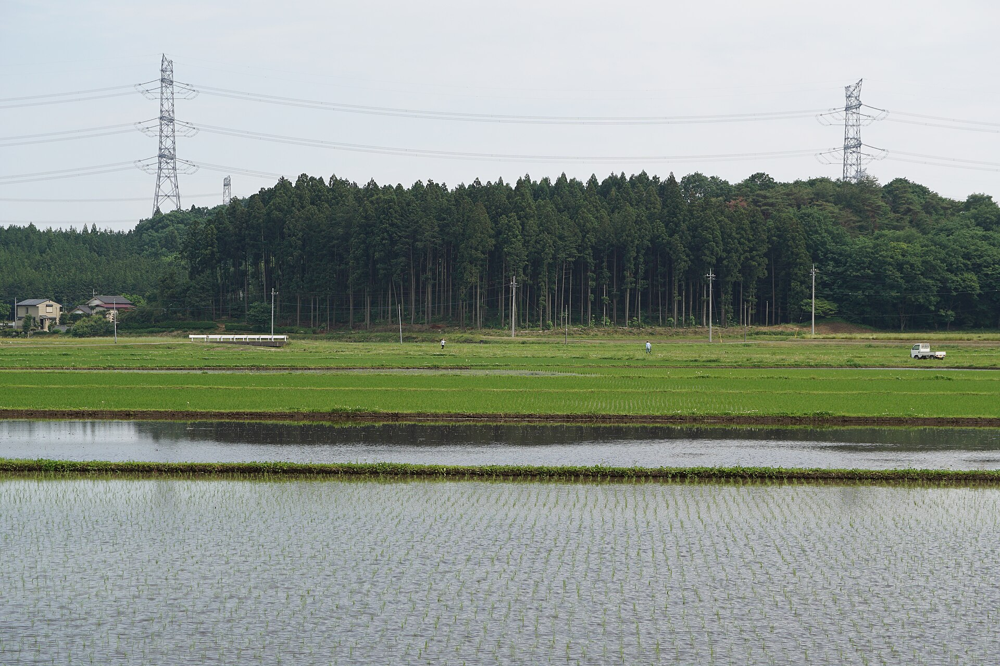
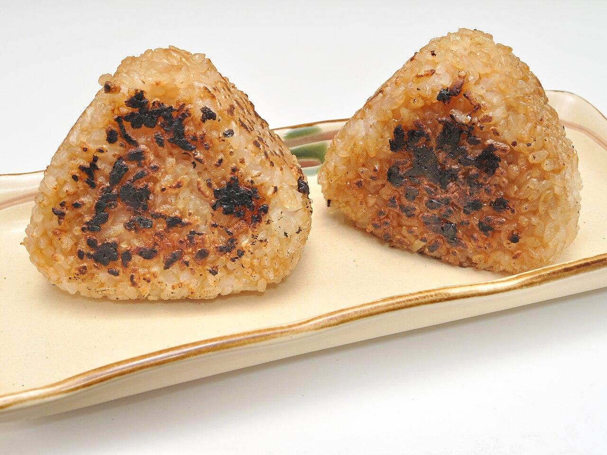
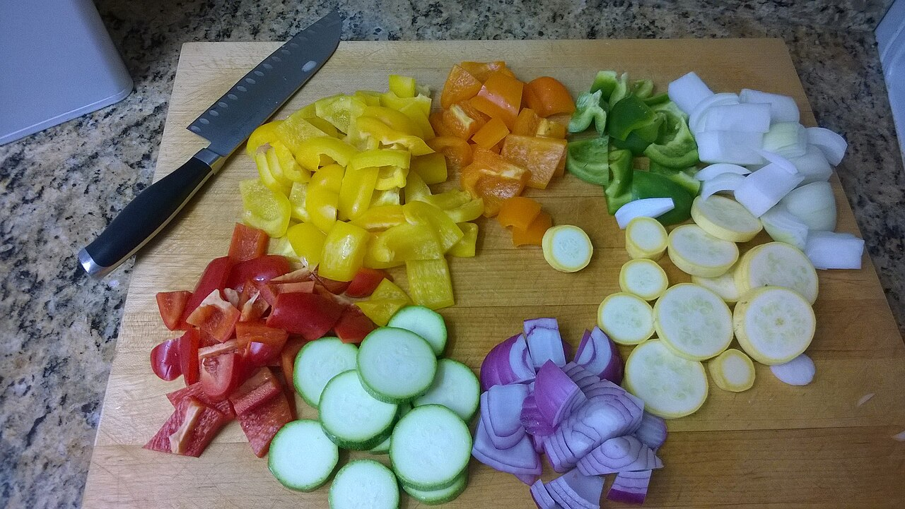
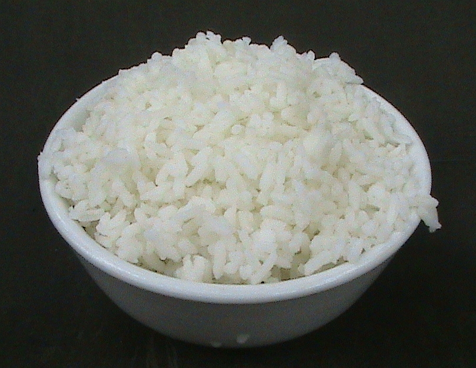

三重県鈴鹿市・中箕田
農家カフェ ippongi育てたお米のおいしさを、
そのまま食卓へ。
米農家の家が、お米のおいしさをもっと多くの人に知ってほしいと開いたカフェ。田んぼのそばで、季節の野菜とごはんをいただく時間です。
お店の由来・想い
お父さんのお米を、もっと多くの人に。
紹介記事によると、ippongiを営む杉本さんのご家族は代々の米農家で、農薬を使わず手間をかけてお米を育てています。無農薬で丁寧にお米を育てるお父さんの姿を見て、「このお米のおいしさをもっと多くの人に知ってもらいたい」と思い、カフェを始めたと紹介されています。
店舗は、使われていなかった米蔵を、できるだけ当時の状態を残して改装したものです。農作業をしながらの営業で、田植えや稲刈りの繁忙期には臨時休業があるとされています。
店名の由来は、記事では「一本の木」とされ、稲の奥に見える大楠が紹介されています。それ以上の意味は確認できていません。

情報源: Life Designs「農家カフェippongi」(2019年9月の紹介記事)/Instagram。記事は掲載から年数が経っているため、現在の内容と異なる場合があります。
上記以外の文章(見出しの言い回しなど)は制作側の表現です。
田んぼと畑のイメージ
お米も野菜も、すぐそばで育つ。
写真は、お米や野菜が育つ風景の雰囲気を伝えるフリー素材です。お店や鈴鹿の実際の風景ではありません。





メニュー
朝ごはんと、お米にあうおかず。
2019年の紹介記事では、次のような提供が紹介されています。メニューは週替わり(手書き)とされ、現在の内容・価格は異なる場合があるため、詳細は「準備中」としています。







写真は料理のイメージで、実際の提供品ではありません。
口コミ
お客様の声(イメージ例)
以下は制作側が作成したイメージ例で、実在のお客様の声ではありません。
田んぼを眺めながらいただくおにぎりが、ほっとする味でした。
ご来店のお客様(イメージ例)野菜がたっぷりで、お米の甘さがよく分かるごはんでした。
ご来店のお客様(イメージ例)朝の静かな時間に、ゆっくり過ごせる居心地のいいお店です。
ご来店のお客様(イメージ例)アクセス
ご案内
| 所在地 | 〒513-0054 三重県鈴鹿市中箕田１丁目２−６ |
|---|---|
| 電話 | 準備中 |
| 営業時間 | 準備中 |
| 定休日 | 準備中 |
| SNS | Instagram @cafe.ippongi |
農作業の繁忙期は臨時休業があるとされています。お出かけ前にInstagramで最新情報をご確認ください。